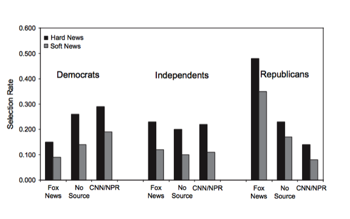

Research Question
- 1. question 1
- point 1
- point 2
- 2.
- 3.
MJ Cho
COMM 272 Presentation
So why should we care about answering these questions?
Tab1
Tab2
Tab3
Multinomial Logit. \[ \begin{aligned} P_{ij} = \frac{exp(X_{ij}\alpha)}{\sum_{k=1}^{J}exp(X_{ij}\alpha)} \end{aligned} \]
